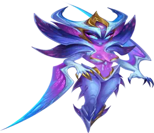
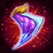

Guide du Titan Alecto : premier Tireur ElariteHero Wars Alliance
- Par : Alexandre Domingos. .
Bonjour mes amis, bon retour ! Si vous jouez a Hero Wars Alliance depuis un moment, vous savez a quel point la meta des Titans peut changer avec une seule nouvelle arrivee. Cette fois, le changement est immense. Alecto, la Lame de la Vengeance, est le tout premier Titan Elarite a entrer dans le Dominion, et elle reecrit clairement les regles des combats de Titans. Elle possede deux elements (Elarite et Feu), frappe tres fort depuis la ligne de front en tant que Tireur, et son kit la rend extremement difficile a bloquer.
Je sais que beaucoup d'entre vous se posent des questions : comment fonctionne-t-elle ? Est-elle vraiment si forte ? Comment faut-il la construire ? Ne vous inquietez pas, je vais vous expliquer chaque detail dans ce guide, tranquillement, etape par etape. Que vous soyez un joueur veteran ou quelqu'un qui trouve encore les combats de Titans un peu confus, ce guide a ete fait pour vous. Allons ensemble decouvrir toute la vraie puissance d'Alecto !

Alecto change vraiment la donne. C'est le premier Titan a manier le tout nouvel element Elarite, une puissance unique decouverte lors des fouilles antiques du mode Royaume. Mais ce qui la rend vraiment speciale, c'est qu'elle appartient aussi a l'element Feu, ce qui lui donne une excellente synergie avec les Titans de Feu deja connus comme Ignis, Araji, Asherona et Moloch.
Son systeme de progression utilise les memes ressources que les Titans normaux, c'est-a-dire les Potions de Titan et les Pierres de Skin de Titan, donc pas besoin de vous inquieter pour des materiaux totalement nouveaux. En revanche, ses artefacts sont exclusifs a la classe Elarite, ce qui veut dire que vous devez profiter au maximum de son evenement pour recuperer ces fragments d'artefacts exclusifs tant qu'ils sont disponibles.
📋 Guide Alecto - Table des matieres
Qui est Alecto dans Hero Wars Alliance ?
Alecto est appelee la « Lame de la Vengeance » et, sincerement, ce nom lui va parfaitement. C'est un Tireur agressif de ligne de front qui fonce derriere les ennemis, frappe plusieurs fois la cible la plus puissante, puis revient en securite. Elle est immunisee contre les debuffs pendant son ultime, ce qui la rend extremement insaisissable. Pensez a elle comme a une assassine mortelle parmi les Titans : rapide, puissante et presque intouchable quand elle attaque.

- Role : Tireur
- Element : Elarite + Feu
- Position : Ligne de front
- Synergie : Titans de Feu
Alecto est le tout premier Titan Elarite dans Hero Wars Alliance. Elle s'est eveillee apres des siecles de sommeil lorsque les fouilles d'Elarite ont revele un pouvoir ancien. Elle manie une force unique a double element qu'aucun autre Titan ne possede, ce qui fait d'elle une veritable puissance titanesque sur le champ de bataille.
Statistiques maximales d'Alecto - Hero Wars Alliance
Voici les statistiques maximales d'Alecto a pleine puissance. Ces chiffres montrent a quel point elle peut etre devastatrice lorsqu'elle est entierement investie. Regardez-les attentivement : comprendre ces statistiques vous aidera a prendre de meilleures decisions pour les skins et les artefacts plus loin dans ce guide :
- Sante : 8,766,683
- Attaque physique : 734,392
- Defense supplementaire contre les Titans de Lumiere : 401,470
- Defense supplementaire contre les Titans de Lumiere et des Tenebres : 120,600
- Degats supplementaires contre les Titans de Lumiere et des Tenebres : 213,000
Comme vous pouvez le voir, l'Attaque physique d'Alecto est enorme avec 734,392, l'une des plus elevees parmi tous les Titans. Combinee a ses competences de burst, elle peut eliminer des cibles cles avant meme qu'elles n'aient le temps d'utiliser leurs capacites. Sa reserve de Sante de presque 8.8 millions lui permet aussi de survivre assez longtemps sur la ligne de front pour declencher ses combos devastateurs.
Avantages et inconvenients d'Alecto - Hero Wars Alliance
✅ Avantages
- Burst devastateur cible sur l'ennemi avec la plus haute Attaque
- Immunisee aux debuffs pendant son ultime, donc tres difficile a stopper
- Double element (Elarite + Feu) offrant une polyvalence unique
- Detruit les equipes Eau, Terre, Tenebres et Lumiere completes au niveau maximum
- Utilise les Potions de Titan et les Pierres de Skin standards pour progresser
❌ Inconvenients
- Les artefacts Elarite exigent des fragments exclusifs, difficiles a farmer hors evenement
- Vraiment efficace surtout dans certaines compositions Feu bien construites
- Perd contre les equipes Feu completes sans Alecto dans certains matchups
- Aucune competence de controle de foule directe (pas d'etourdissement, silence ou ralentissement)
Guide des competences d'Alecto - Hero Wars Alliance
Comprendre les competences d'Alecto est la cle pour la maitriser en combat. Je vais vous expliquer son aptitude en detail pour que vous sachiez exactement ce qui se passe.
Jugement du Destin (Ultime)
C'est l'attaque signature d'Alecto, et elle est absolument devastatrice. Laissez-moi vous l'expliquer etape par etape pour que tout le monde comprenne exactement ce qui se passe :
Etape 1 — Le dash : Quand Alecto active Jugement du Destin, elle se teleporte derriere l'ennemi ayant la statistique d'Attaque la plus elevee. Elle ne court pas jusqu'a lui : elle disparait litteralement de sa position et reapparait derriere la plus grande menace de l'equipe adverse.
Etape 2 — La frappe : Elle frappe ensuite cette cible ainsi que tous les ennemis proches 5 fois en succession rapide. Chaque coup inflige d'enormes degats physiques. Si les ennemis sont regroupes, plusieurs Titans sont touches par chacune des frappes.
Etape 3 — Le retour : Apres les 5 frappes, elle revient a sa position d'origine sur la ligne de front. Elle ne reste pas derriere les lignes ennemies : elle entre, inflige ses degats, puis ressort en securite.
Etape 4 — Immunite aux debuffs : Pendant toute cette sequence, Alecto est totalement immunisee a tous les debuffs. Cela veut dire pas d'etourdissement, pas de silence, pas de ralentissement, pas de reduction d'armure, rien ne peut l'interrompre. C'est ce qui la rend si dangereuse et si difficile a contrer.
Degats par coup : 514,074
Formule : (70 % de l'Attaque physique) par coup, calcule comme (0.70 × 734,392 = 514,074).
Degats potentiels totaux sur une cible unique :
514,074 × 5 coups = 2,570,370 degats physiques totaux
Pour vous donner une idee : la plupart des Titans ont entre 5 et 9 millions de Sante. Un seul ultime d'Alecto peut retirer environ 25 % a 50 % de la barre de vie totale d'un Titan en un seul burst. Et comme elle cible toujours le Titan avec la plus haute Attaque, elle assassine naturellement le principal damage dealer ennemi en premier, ce qui handicape toute l'equipe adverse des le debut du combat.
Pourquoi l'immunite aux debuffs est-elle si importante ? Beaucoup de joueurs utilisent des Titans avec du controle pour interrompre les ennemis pendant leurs ultimes. Normalement, si vous etourdissez un Titan en pleine attaque, vous annulez completement ses degats. Mais avec Alecto, cette strategie ne fonctionne tout simplement pas. Elle fonce, inflige les 5 frappes, puis revient, quoi que l'ennemi tente. Cela fait d'elle l'un des damage dealers les plus fiables du jeu.
💭 Note strategique : l'ultime d'Alecto cible toujours l'ennemi avec la plus haute Attaque physique. Cela signifie qu'elle elimine naturellement la plus grande menace de l'equipe adverse en premier. En PVP, cela fait d'elle une assassine incroyable : elle retire tres tot le principal damage dealer ennemi, laissant le reste de l'equipe presque sans impact. Associez-la a des Titans de Feu capables d'infliger des degats de zone pendant qu'Alecto s'occupe de la cible prioritaire. La combinaison de son burst d'assassinat et des degats soutenus de l'equipe cree une offensive ecrasante que tres peu de compositions peuvent supporter.
Meilleur skin pour le Titan Alecto - Hero Wars Alliance
Alecto a actuellement deux skins : le Skin par defaut et le Skin primordial. Je vais vous expliquer lequel vous devez prioriser et pourquoi.
Skin par defaut (Attaque physique)
Attaque physique : +196,800
Le Skin par defaut augmente l'Attaque physique d'Alecto, qui est sa statistique principale de degats. Comme chacune de ses frappes depend directement de cette statistique, surtout son ultime Jugement du Destin calcule a (70 % de l'ATK par coup × 5 coups), ce skin augmente directement les degats de tout son kit. Plus d'Attaque physique signifie de plus gros chiffres sur chaque frappe, plus de kills et plus de victoires.
Voici un exemple simple : les +196,800 d'Attaque physique de ce skin ajoutent a chaque coup de Jugement du Destin un bonus de (0.70 × 196,800 = 137,760 degats supplementaires par coup). Sur 5 coups, cela fait (137,760 × 5 = 688,800 degats supplementaires au total) rien qu'avec ce skin. Cela peut faire la difference entre tuer un Titan ennemi ou le laisser survivre.
Priorite d'evolution pour le PVP : Tres elevee – L'Attaque physique est la statistique la plus importante d'Alecto. Chaque point d'ATK se transforme directement en plus de degats sur chacune de ses capacites. C'est votre priorite numero un pour les skins.
Priorite d'evolution pour le Donjon : Elevee – En tant que Titan de Feu, Alecto performe bien dans le Donjon contre la Terre et dans d'autres matchups. Les degats supplementaires aident a nettoyer les vagues plus vite et plus efficacement.
Skin primordial (Defense supplementaire contre les Titans de Lumiere)
Defense supplementaire contre les Titans de Lumiere : +401,470
Le Skin primordial donne de la Defense supplementaire contre les Titans de Lumiere. C'est une statistique defensive qui reduit les degats qu'Alecto subit specifiquement des Titans de l'element Lumiere. Elle est tres utile contre les equipes Lumiere (comme Lumira, Amon, Solaris, Iyari ou les compositions Rigel), mais n'apporte aucun benefice contre les adversaires qui ne sont pas de Lumiere.
Dans la meta actuelle, les Titans de Lumiere sont tres populaires grace aux puissantes synergies de Lumira. Avoir +401,470 de Defense supplementaire contre eux rend Alecto beaucoup plus resistante dans ces affrontements. Cependant, puisque cette statistique ne fonctionne que contre un seul des cinq types elementaires, elle reste secondaire par rapport au Skin par defaut, qui augmente les degats contre tout le monde.
Priorite d'evolution pour le PVP : Moyenne-elevee – Les Titans de Lumiere sont courants dans la meta actuelle, ce qui rend ce skin utile pour certains matchups. Ameliorez-le apres avoir maximise le Skin par defaut.
Priorite d'evolution pour le Donjon : Moyenne – Impact moindre en Donjon, car vous n'affronterez pas toujours des Titans de Lumiere. Investissez ici seulement apres avoir termine le Skin par defaut.
💡 Resume de priorite des skins :
1re priorite : Skin par defaut (Attaque physique +196,800) — Bonus de degats direct pour toutes les competences contre tous les ennemis.
2e priorite : Skin primordial (Defense supplementaire contre la Lumiere +401,470) — Bonne option defensive contre les compositions Lumiere.
Priorite d'evolution des artefacts d'Alecto - Hero Wars Alliance
Les artefacts d'Alecto sont uniques et speciaux. En tant que premier Titan Elarite, sa Couronne (Couronne Elarite) et son Sceau (Sceau d'Attaque Chtonien) sont des objets exclusifs a la classe Elarite, partages avec les futurs Titans Elarite. Son Arme (Aile de Zorval) est en revanche unique a Alecto. Vous utiliserez la meme Poussiere de Fee pour monter les artefacts, mais pour augmenter leurs etoiles, il vous faudra des fragments d'artefacts Elarite exclusifs. Ces fragments sont tres rares et difficiles a obtenir en dehors de l'evenement d'Alecto, alors farmez-en le plus possible tant que l'evenement est actif.

Aile de Zorval (Artefact d'arme)
Chance d'activation : 100 %
Attaque physique : +120,000
Effet : Quand Alecto utilise la competence Jugement du Destin en combat, cela declenche un effet qui donne des statistiques bonus a toute l'equipe pendant 9 secondes.
Laissez-moi vous expliquer pourquoi c'est le meilleur artefact : avec une chance d'activation de 100 %, il se declenche a chaque fois qu'Alecto utilise son ultime, sans aucune part de hasard. Chaque fois qu'elle fonce et frappe, votre equipe entiere recoit un bonus de statistiques pendant 9 secondes. C'est un enorme pic de puissance pour vos cinq Titans.
En plus de cela, il donne +120,000 d'Attaque physique, ce qui augmente directement les degats de Jugement du Destin. Plus d'ATK signifie plus de degats par coup : (0.70 × 120,000 = 84,000 supplementaires par coup × 5 = 420,000 degats supplementaires au total). Et toute votre equipe est boostee par-dessus le marche. La valeur est incroyable.
Priorite d'evolution pour le PVP : Tres elevee – Le buff garanti pour toute l'equipe a chaque ultime, combine au gros bonus d'ATK, en fait l'artefact numero un absolu. Montez-le et etoilez-le en premier, sans hesiter.
Priorite d'evolution pour le Donjon : Elevee – Le buff d'equipe fonctionne tout aussi bien en Donjon et donne a toute votre equipe Feu de meilleures statistiques dans les moments decisifs.

Couronne Elarite (Artefact Couronne)
Degats supplementaires contre les Titans de Lumiere et des Tenebres : +213,000
Defense supplementaire contre les Titans de Lumiere et des Tenebres : +120,600
La Couronne Elarite est un artefact Couronne special exclusif a la classe Elarite. Contrairement aux Couronnes elementaires standards (comme la Couronne de Feu qui fonctionne contre la Terre, l'Eau et les Tenebres), celle-ci se concentre specifiquement sur les Titans de Lumiere et des Tenebres. Elle donne a Alecto a la fois plus de degats contre eux et plus de defense face a eux.
Dans la meta actuelle, les equipes Lumiere (compositions Lumira) et les equipes Tenebres (compositions Umbra) sont tres presentes. Avoir +213,000 degats supplementaires contre les deux est extremement precieux. Les +120,600 de defense supplementaire rendent aussi Alecto plus difficile a tuer dans ces affrontements.
Cependant, comme il existe cinq types elementaires de Titans (Terre, Eau, Feu, Lumiere, Tenebres), cette Couronne n'en couvre que deux. Contre des adversaires Terre, Eau ou Feu, elle ne donne absolument rien. C'est pour cela qu'elle passe derriere l'Aile de Zorval et le Sceau d'Attaque Chtonien dans l'ordre de priorite.
Priorite d'evolution pour le PVP : Moyenne-elevee – Tres utile contre les equipes Lumiere et Tenebres courantes dans la meta, mais inutile contre la Terre, l'Eau ou le Feu. C'est un bon troisieme artefact dans lequel investir.
Priorite d'evolution pour le Donjon : Moyenne – Les combats du Donjon sont melanges. La Couronne aide dans les sections Lumiere/Tenebres mais ne sert a rien ailleurs. Priorisez d'abord l'Arme et le Sceau pour une valeur plus reguliere dans tous les combats.
Sceau d'Attaque Chtonien (Artefact Sceau)
Attaque physique : +107,400
Sante : +3,450,000
Le Sceau d'Attaque Chtonien est un autre artefact exclusif a la classe Elarite. Il fournit une combinaison massive d'offensive et de defense : Attaque physique (+107,400) pour plus de degats et Sante (+3,450,000) pour plus de survie.
Pourquoi est-il si bon ? Alecto combat sur la ligne de front, ce qui signifie qu'elle subit directement les degats ennemis. Les +3,450,000 de Sante constituent un enorme filet de securite : cela lui permet de survivre plus longtemps et donc d'avoir plus d'occasions d'activer Jugement du Destin et de lancer son burst colossal. Pendant ce temps, les +107,400 d'Attaque physique ajoutent des degats supplementaires : (0.70 × 107,400 = 75,180 supplementaires par coup × 5 = 375,900 degats supplementaires au total).
Cet artefact offre le meilleur des deux mondes : plus de degats ET plus de survie. Il fonctionne contre toutes les compositions, quel que soit l'element, ce qui le rend plus universellement utile que la Couronne Elarite.
Priorite d'evolution pour le PVP : Elevee – Le bonus combine d'ATK + Sante est essentiel pour garder Alecto en vie tout en infligeant d'enormes degats. Priorisez-le juste apres l'Aile de Zorval.
Priorite d'evolution pour le Donjon : Elevee – Survie et degats dans un seul artefact. Excellente valeur pour les longues runs de Donjon ou Alecto doit tenir a travers plusieurs vagues.
💡 Resume de priorite des artefacts :
1er : Aile de Zorval (Arme) — Buff d'equipe a 100 % + bonus d'ATK. Toujours a prioriser en premier.
2e : Sceau d'Attaque Chtonien — ATK + enorme Sante. Meilleures statistiques universelles globales.
3e : Couronne Elarite — Situationnelle mais tres puissante contre les equipes meta Lumiere et Tenebres.
⚠️ Important : les fragments d'artefacts Elarite sont exclusifs et extremement difficiles a obtenir hors evenement. Assurez-vous d'en farmer un maximum pendant l'evenement d'Alecto. Ne sautez pas cet evenement en pensant les recuperer facilement plus tard. Sans evenement, leur collecte prendra tres longtemps.
Comment contrer le Titan Alecto - Hero Wars Alliance
Alecto est incroyablement puissante, mais elle n'est pas invincible. Laissez-moi vous montrer les compositions capables de la battre et vous expliquer precisement pourquoi elles fonctionnent :
Le counter le plus efficace contre une equipe Alecto (Ignis, Asherona, Araji, Alecto, Moloch) est une autre equipe Alecto, mais uniquement en defense. Dans des tests au niveau maximum, lorsqu'une equipe Alecto attaque une equipe Alecto miroir en defense, l'equipe attaquante perd 10-0. La defense a un avantage enorme dans les matchs miroir, car le positionnement et la priorite de cible de l'equipe defensive lui donnent l'avantage. Donc si votre adversaire a une equipe Alecto maxee en defense, n'attaquez PAS avec la meme composition, vous perdrez a chaque fois.

Une equipe complete de Titans de Feu sans Alecto peut battre une equipe Alecto. Par exemple : Ignis, Araji, Vulcan, Asherona, Moloch, soit un Titan Feu complet traditionnel. Cela fonctionne parce que la composition Feu classique possede des synergies profondement etablies et des degats soutenus capables de resister au burst d'Alecto. Leurs bonus de Feu combines et leur pression constante finissent par user l'equipe Alecto sur la duree du combat.
Meilleures equipes pour le Titan Alecto - Hero Wars Alliance
Alecto s'integre parfaitement dans les compositions de Titans de Feu. Voici l'equipe la plus puissante que vous puissiez construire autour d'elle, et c'est la meme equipe qui a obtenu tous les resultats en 10-0 mentionnes plus haut :
Alecto (Tireur — Elarite/Feu) : la star de cette equipe. Son burst elimine d'abord l'ennemi le plus dangereux, son immunite aux debuffs la rend impossible a neutraliser, et son artefact Aile de Zorval booste toute l'equipe a chaque ultime. C'est elle qui permet a cette equipe de dominer presque tous les matchups du jeu.
Ce que l'equipe d'Alecto detruit (tests au niveau maximum)
Lors de tests approfondis au niveau maximum, l'equipe Feu d'Alecto (Ignis, Asherona, Araji, Alecto, Moloch) domine completement les compositions suivantes :
- Equipes Eau completes — Y compris les equipes avec le nouvel Invocateur Tydus ! Normalement, l'Eau contre le Feu, mais la puissance Elarite + Feu d'Alecto renverse totalement ce matchup. Resultat : victoire 10-0
- Equipes Terre completes — Le Feu contre naturellement la Terre, et Alecto amplifie enormement cet avantage. Resultat : victoire 10-0
- Equipes Tenebres completes — La Couronne Elarite d'Alecto fournit des degats et une defense supplementaires contre les Titans des Tenebres. Resultat : victoire 10-0
- Equipes Lumiere completes — Le meme avantage de la Couronne Elarite contre les Titans de Lumiere ecrase meme les compositions Lumira. Resultat : victoire 10-0
Tous les resultats ci-dessus ont ete testes au niveau maximum avec des statistiques entierement ameliorees. Alecto ne se contente pas de gagner ces matchups : elle les domine avec des scores parfaits. Elle redessine litteralement toute la meta Titan. Les seuls counters fiables sont les matchs miroir, qui favorisent la defense, et les equipes Feu traditionnelles sans Alecto.
Equipe - Faiblesses et points d'attention
Faible contre :
- Equipe miroir Alecto (Defense) : quand votre adversaire a exactement la meme equipe en defense, vous perdrez 10-0 en tant qu'attaquant. L'avantage defensif en match miroir est absolu. Si vous rencontrez cette situation, evitez d'attaquer, cherchez une autre cible ou acceptez la defaite.
- Equipe Feu complete sans Alecto : les compositions Feu traditionnelles (Ignis, Araji, Asherona, Moloch avec un 5e Titan different) peuvent battre l'equipe d'Alecto. Leurs synergies deja bien etablies et leurs degats Feu soutenus peuvent survivre au burst d'Alecto.
Considerations strategiques : cette equipe aneantit les equipes Eau completes (y compris les compositions Tydus), les equipes Terre completes, les equipes Tenebres completes et les equipes Lumiere completes, toutes avec un score parfait de 10-0 dans les tests au niveau maximum. Alecto renverse litteralement des matchups qui etaient autrefois difficiles pour les equipes Feu, surtout contre l'Eau. C'est l'ajout de Titan le plus determinant pour la meta de ces dernieres annees. Si vous ne pouvez investir que dans un seul Titan cette annee, choisissez Alecto.
Conclusion - Alecto change tout
Mes amis, j'espere vraiment que ce guide vous a aide a comprendre a quel point Alecto est speciale. Ce n'est pas juste un Titan de plus : c'est la premiere representante d'un tout nouvel element, elle possede deux elements (Elarite + Feu), elle est immunisee aux debuffs pendant son ultime, et elle domine presque tous les matchups du jeu avec des scores parfaits de 10-0. La meta Titan ne sera plus jamais la meme apres l'arrivee d'Alecto.
Mon conseil le plus important : investissez fortement dans son evenement ! Les fragments d'artefacts Elarite sont exclusifs et incroyablement rares hors evenement. Plus vite vous maximiserez ses artefacts, surtout l'Aile de Zorval, plus vite vous verrez des resultats devastateurs dans vos combats. Concentrez-vous d'abord sur l'Aile de Zorval, puis sur le Sceau d'Attaque Chtonien, et enfin sur la Couronne Elarite.
Pour votre equipe, associez-la a Ignis, Asherona, Araji et Moloch pour obtenir la composition Feu la plus dominante du jeu. Cette equipe detruit les equipes Eau, Terre, Lumiere et Tenebres avec un score parfait de 10-0. Les seules choses dont vous devez vraiment vous mefier sont les matchs miroir en defense et les equipes Feu traditionnelles sans Alecto.
Pour ses skins, priorisez d'abord le Skin par defaut (Attaque physique), car il augmente directement les degats de son ultime Jugement du Destin. Le Skin primordial (Defense supplementaire contre la Lumiere) est une bonne seconde option pour les matchups contre les equipes Lumiere.
Merci beaucoup d'avoir lu ce guide ! S'il vous a aide, partagez-le avec vos compagnons de guilde et vos amis. Chaque connaissance partagee rend notre communaute plus forte. Et si vous avez des questions, n'hesitez pas a laisser un commentaire ci-dessous. Je les lis tous. A bientot dans le Dominion !
Explorez de nouvelles competences avec nos guides en vedette !
Laissez votre avis !
Avez-vous aime notre guide du Titan Alecto ? Y a-t-il quelque chose que vous n'avez pas compris ou des changements que vous aimeriez suggerer ? Nous vous invitons a rejoindre notre section commentaires sur la page du blog Alexandre Games. N'hesitez pas a donner votre avis, poser vos questions et partager vos suggestions.
Cliquez sur le bouton ci-dessous pour commencer :